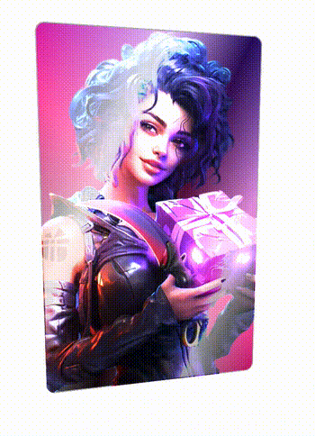

非常有意思酷炫的效果。而本文，我们不会完全还原此效果，而是基于此效果，尝试去制作这么一个类似的卡片交互效果：

该效果的几个核心点：
- 卡片的 3D 旋转跟随鼠标移动效果
- 如何让卡片在 Hover 状态，有不同的光泽变化
- 如何让卡片在 Hover 状态，有 Blink，Blink 的星星闪烁效果
当然，要做到卡片的 3D 旋转跟随鼠标移动效果需要一定程度的借助 JavaScript，因此，最终的效果是 CSS 配合 JavaScript 以及一些动态效果的 Gif 共同实现。
好，下面就让我们一步一步一起来实现这个效果。
卡片的 3D 旋转跟随效果
OK，接下来，如何实现 3D 卡片效果呢？
这个效果之前在 让交互更加生动！有意思的鼠标跟随 3D 旋转动效 实现过一次，我们复习一下。
这个交互效果主要有两个核心：
- 借助了 CSS 3D 的能力
- 元素的旋转需要和鼠标的移动相结合
我们的目标是实现这样一个动画效果：

这里，我们其实有两个核心元素：
- 鼠标活动区域
- 旋转物体本身
鼠标在鼠标活动区域内的移动，会影响旋转物体本身的 3D 旋转，而旋转的方向其实可以被分解为 X 轴方向与 Y 轴方向。
我们来看一下，假设我们的 HTML 结构如下：
<body>
<div id="element"></div>
</body>
得到这样一个图形：

这里，body 的范围就是整个鼠标可活动区域，也是我们添加鼠标的 mousemove 事件的宿主 target，而 #element 就是需要跟随鼠标一起转动的旋转物体本身。
因为整个效果是需要基于 CSS 3D 的，我们首先加上简单的 CSS 3D 效果：
/*
transform-style: preserve-3d; 和 perspective: 500px; 这两个 CSS 属性是用来控制 3D 空间效果的。
1. transform-style: preserve-3d;
- 这个属性定义了元素的子元素是位于 3D 空间中还是平面上。
- 当设置为 `preserve-3d` 时，子元素将位于 3D 空间中，可以应用 3D 变换。
- 如果不设置这个属性，子元素将被扁平化到父元素的平面上。
2. perspective: 500px;
- 这个属性定义了观察者与 Z=0 平面的距离，从而产生 3D 透视效果。
- 数值越小，观察者距离越近，3D 效果越明显。
- 数值越大，观察者距离越远，3D 效果越不明显。
在你的代码中:
1. body 元素设置了 transform-style: preserve-3d; 和 perspective: 500px;，这意味着:
- 整个页面都位于 3D 空间中。
- 观察者距离 Z=0 平面的距离为 500 像素。
2. div 元素也设置了 transform-style: preserve-3d;，这意味着:
- 这个 div`元素及其子元素也位于 3D 空间中。
- 它们可以应用 3D 变换效果，如旋转、缩放等。
总的来说，这些 CSS 属性共同创造了一个 3D 空间环境，使得页面元素可以在这个空间中进行各种 3D 变换和效果展示。
*/
body {
width: 100vw;
height: 100vh;
transform-style: preserve-3d;
perspective: 500px;
}
div {
width: 200px;
height: 200px;
background: #000;
transform-style: preserve-3d;
}
效果如下：

没有什么不一样。这是因为还没有添加任何的 3D 变换，我们给元素添加 X、Y 两个方向的 rotate() 试一下（注意，这里默认的旋转圆心即是元素中心）：
div {
transform: rotateX(15deg) rotateY(30deg);
}
效果如下，是有那么点意思了：

好，接下来，我们的目标就是通过结合 mouseover 事件，让元素动起来。
控制 X 方向的移动
当然，为了更加容易理解，我们把动画拆分为 X、Y 两个方向上的移动。首先看 X 方向上的移动：

这里，我们需要以元素的中心为界：
- 当鼠标在中心右侧连续移动，元素绕 Y 轴移动，并且值从 0 开始，越来越大，范围为(0, +∞)deg
- 反之，当鼠标在中心左侧连续移动，元素绕 Y 轴移动，并且值从 0 开始，越来越小，范围为(-∞, 0)deg
这样，我们可以得到这样一个公式：
rotateY = (鼠标 x 坐标 - 元素左上角 x 坐标 - 元素宽度的一半)deg
通过绑定 onmousemove 事件，我们尝试一下：
const mouseOverContainer = document.getElementsByTagName("body")[0];
const element = document.getElementById("element");
mouseOverContainer.onmousemove = function (e) {
let box = element.getBoundingClientRect();
let calcY = e.clientX - box.x - box.width / 2;
element.style.transform = "rotateY(" + calcY + "deg) ";
};
效果如下：

好吧，旋转的太夸张了，因此，我们需要加一个倍数进行控制：
const multiple = 20;
const mouseOverContainer = document.getElementsByTagName("body")[0];
const element = document.getElementById("element");
mouseOverContainer.onmousemove = function (e) {
let box = element.getBoundingClientRect();
let calcY = (e.clientX - box.x - box.width / 2) / multiple;
element.style.transform = "rotateY(" + calcY + "deg) ";
};
通过一个倍数约束后，效果好了不少：

控制 Y 方向的移动
同理，我们利用上述的方式，同样可以控制 Y 方向上的移动：
const multiple = 20;
const mouseOverContainer = document.getElementsByTagName("body")[0];
const element = document.getElementById("element");
mouseOverContainer.onmousemove = function (e) {
let box = element.getBoundingClientRect();
let calcX = (e.clientY - box.y - box.height / 2) / multiple;
element.style.transform = "rotateX(" + calcX + "deg) ";
};
效果如下：

当然，在这里，我们会发现方向是元素运动的方向是反的，所以需要做一下取反处理，修改下 calcX 的值，乘以一个 -1 即可：
let calcX = ((e.clientY - box.y - box.height / 2) / multiple) * -1;
结合 X、Y 方向的移动
OK，到这里，我们只需要把上述的结果合并一下即可，同时，上面我们使用的是 onmousemove 触发每一次动画移动。现代 Web 动画中，我们更倾向于使用 requestAnimationFrame 去优化我们的动画，确保每一帧渲染一次动画即可。
完整的改造后的代码如下：
const multiple = 20;
const mouseOverContainer = document.getElementsByTagName("body")[0];
const element = document.getElementById("element");
function transformElement(x, y) {
let box = element.getBoundingClientRect();
let calcX = -(y - box.y - box.height / 2) / multiple;
let calcY = (x - box.x - box.width / 2) / multiple;
element.style.transform =
"rotateX(" + calcX + "deg) " + "rotateY(" + calcY + "deg)";
}
mouseOverContainer.addEventListener("mousemove", (e) => {
window.requestAnimationFrame(function () {
transformElement(e.clientX, e.clientY);
});
});
至此，我们就能简单的实现题图所示的鼠标跟随 3D 旋转动效：

设置平滑出入
现在，还有最后一个问题，就是当我们的鼠标离开活动区域时，元素的 transform 将停留在最后一帧，正确的表现应该是复原到原状。因此，我们还需要添加一些事件监听做到元素的平滑复位。
通过一个 mouseleave 事件配合元素的 transition 即可。
div {
/* 与上述保持一致... */
transition: all 0.2s;
}
mouseOverContainer.addEventListener("mouseleave", (e) => {
window.requestAnimationFrame(function () {
element.style.transform = "rotateX(0) rotateY(0)";
});
});
至此，我们就可以完美的实现平滑出入，整体效果最终如下：
完整的代码，你可以戳这里：CodePen Demo -- CSS 3D Rotate With Mouse Move
Hover 状态下的光泽变化
好，有了上述铺垫之后，我们就可以将黑色背景图，替换成实际的图片，得到这么一个初步效果：

接下来，我们需要让卡片能够变得有光泽，并且也能基于鼠标 Hover 的坐标不同，展现出不一样的效果，像是这样：

怎么实现呢？看似复杂，其实只需要简单的利用混合模式即可。其中本质就是图片叠加上黑白相间的渐变，再调整混合模式，就能实现上述的高光效果。
代码如下：
<div></div>
div {
position: relative;
background: url("image.png");
&::before {
content: "";
position: absolute;
inset: 0;
background: linear-gradient(
115deg,
transparent 0%,
rgba(255, 255, 255, 0.5) 30%,
rgba(0, 0, 0, .5) 55%),
rgba(255, 255, 255, .5) 80%),
transparent 100%
);
mix-blend-mode: color-dodge;
}
}
这里，我们利用 div 元素的背景展示了图片，利用元素的伪元素展示了黑白渐变效果，最终再叠加上混合模式 mix-blend-mode: color-dodge，示意图如下：
但是，此时，只有卡片是有 3D 效果的，叠加的黑白渐变层是不会随着 Hover 效果进行变化的：
为了解决这个问题，我们需要让渐变图层也能受到 Hover 的动态影响，这个好做，我们额外引入一个 CSS 变量，基于鼠标当前 Hover 卡片时，距离卡片最左侧的横向距离，设置动态的 CSS 变量。
改造一下代码：
<div id="g-img"></div>
div {
--per: 30%;
position: relative;
/* // ... */
&::before {
content: "";
position: absolute;
inset: 0;
background: linear-gradient(
115deg,
transparent 0%,
rgba(255, 255, 255, 0.5) var(--per),
rgba(0, 0, 0, 0.5) calc(var(--per) + 25%),
rgba(255, 255, 255, 0.5) calc(var(--per) + 50%),
transparent 100%
);
mix-blend-mode: color-dodge;
}
}
const multiple = 15;
const mouseOverContainer = document.getElementsByTagName("body")[0];
const element = document.getElementById("element");
const img = document.getElementById("g-img");
function transformElement(x, y) {
let box = element.getBoundingClientRect();
const calcX = -(y - box.y - box.height / 2) / multiple;
const calcY = (x - box.x - box.width / 2) / multiple;
const percentage = parseInt(((x - box.x) / box.width) * 1000) / 10;
element.style.transform =
"rotateX(" + calcX + "deg) " + "rotateY(" + calcY + "deg)";
// 额外增加一个控制 --per 的变量写入
img.style = `--per: ${percentage}%`;
}
mouseOverContainer.addEventListener("mousemove", (e) => {
window.requestAnimationFrame(function () {
transformElement(e.clientX, e.clientY);
});
});
简单解释一下，上述代码最核心的部分就是引入了 --per CSS 变量，其应用在渐变代码中。
我们通过计算当前鼠标距离卡片左侧的横向距离，除以卡片整体的宽度，得到 --per 实际表示的百分比，再赋值给 --per，以此实现 Hover 时候的光效变化：

叠加星星闪烁效果
好，效果已经非常接近了。当然，总感觉缺少什么，我们可以在这一步，继续叠加上另外一层星星闪烁的效果。
这里，我们可以用现成的 GIF 图，像是这样（图片来源于 Pokemon Card Holo Effect）：

这样，我们的整个效果，其实就变成了这种叠加状态：
我们再简单改造一下代码：
#g-img {
--per: 30%;
position: relative;
background: url("image.png");
&::after {
content: "";
display: none;
position: absolute;
inset: 0;
background: url("https://s3-us-west-2.amazonaws.com/s.cdpn.io/13471/sparkles.gif");
mix-blend-mode: color-dodge;
}
&::before {
content: "";
display: none;
position: absolute;
background: linear-gradient(
115deg,
transparent 0%,
rgba(255, 255, 255, 0.7) var(--per),
rgba(0, 0, 0, 0.6) calc(var(--per) + 25%),
rgba(255, 255, 255, 0.5) calc(var(--per) + 50%),
transparent 100%
);
mix-blend-mode: color-dodge;
}
&:hover::after,
&:hover::before {
display: block;
}
}
当 Hover 状态下，才展示渐变背景与星星 Gif 图的叠加效果，最终，我们就实现了最开头的效果：

完整的代码，你可以戳这里 CodePen Demo -- CSS 3D Rotate With Mouse Move
尝试不同渐变背景与不同混合模式
了解上述制作方式的全过程后，我们就可以改变叠加的混合模式与渐变背景，以创造更多不一样的效果。
像是这样：
完整的代码，你可以戳这里 CodePen Demo -- CSS 3D Rotate With Mouse Move2
或者是这样：

完整的代码，你可以戳这里 CodePen Demo -- CSS 3D Rotate With Mouse Move3